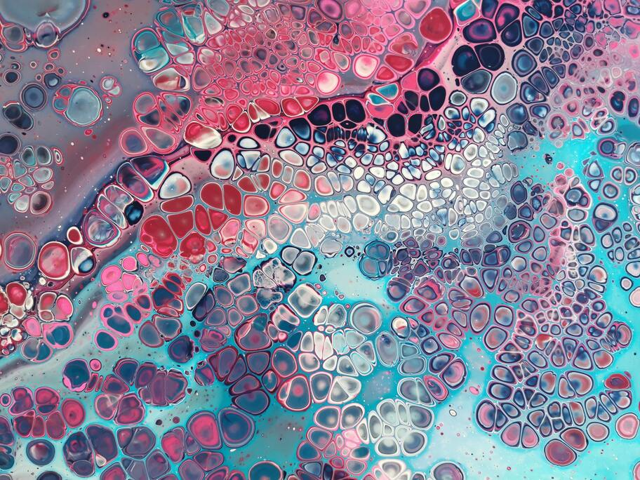
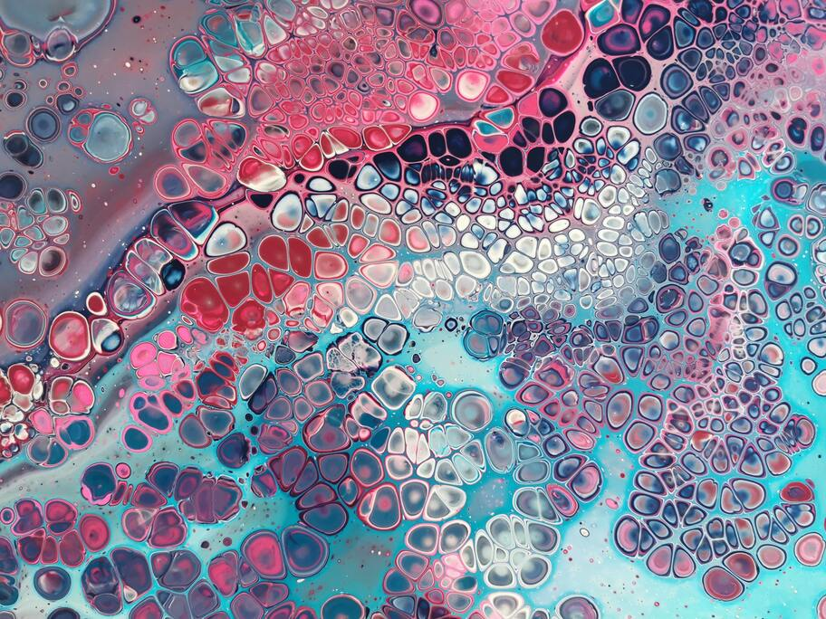
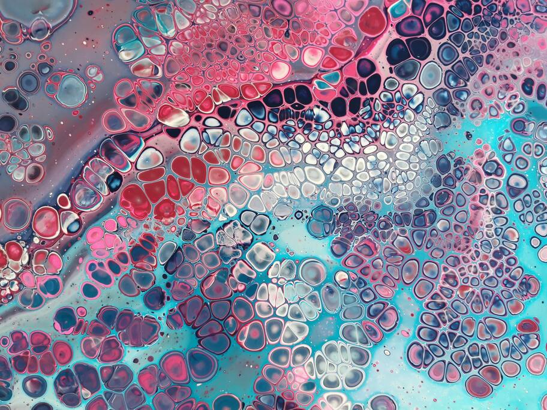

My favorite Pexels Photos
 

I found these photos just scrolling in the abstract genre in the webpage Pexels. Take a look for more!

I found these photos just scrolling in the abstract genre in the webpage Pexels. Take a look for more!